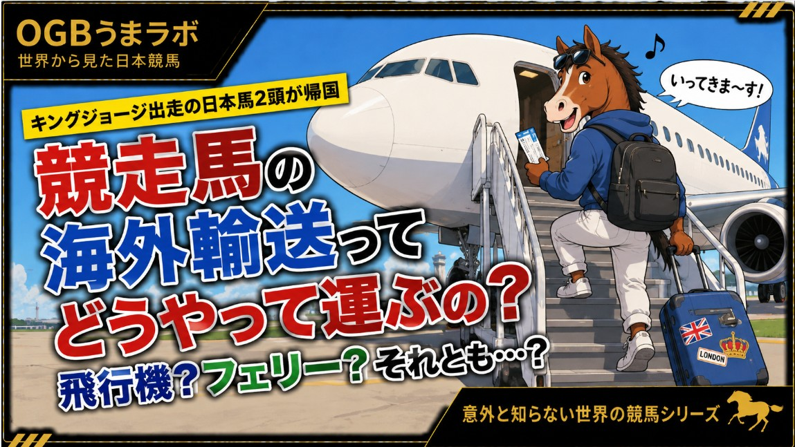

この記事はXに掲載された当時の原文です。情報は掲載時点の内容です。
キングジョージ遠征馬が帰国
競走馬はどうやって飛行機に乗るのか？
JRAは8月2日、イギリスのキングジョージⅥ世＆クイーンエリザベスステークスに遠征したヴェルテンベルクとマスカレードボールが帰国したと発表しました。
海外遠征馬のニュースでは「無事帰国」という一文で終わることがほとんどです。
しかし、体重500キロ前後にもなる競走馬は、どのように飛行機へ乗っているのでしょうか。
今回は、競走馬の航空輸送で使用される「ホースストール」を中心に、その仕組みを紹介します。
■飛行機版の馬運車
ホースストールを分かりやすく説明すると、
「馬運車の荷台部分をコンテナにして、そのまま飛行機へ載せられるようにしたもの」
というイメージです。
馬運車の内部には、馬が立って移動するための区画があります。ホースストールも基本的な構造はよく似ていますが、航空貨物として機内へ搭載できるよう設計されています。
馬は地上に置かれたストールへ自分で歩いて入り、扉を閉めた後、ストールごと大型リフトで航空機のメインデッキまで持ち上げられます。
つまり、馬を飛行機へ直接乗せるのではなく、馬が入った専用馬房ごと空を飛ぶ仕組みです。
■ホースストールの中はどうなっている？
一般的なホースストールは、内部の仕切りを動かすことで1頭から3頭まで収容できます。
3頭で使用する場合は1頭ごとの区画が狭くなり、2頭なら広め、1頭だけならストール全体を使用します。
輸送会社では分かりやすく、
・3頭使用＝エコノミークラス
・2頭使用＝ビジネスクラス
・1頭使用＝ファーストクラス
と呼ぶこともあります。
もちろん旅客機の正式な座席区分ではなく、1頭あたりのスペースを表した通称です。
ストール内部には滑りにくい床が設けられ、乾草ネットや給水設備も取り付けられます。
単なる輸送箱ではなく、飛行中も馬が立ったまま落ち着いて過ごせるよう工夫された「空を飛ぶ馬房」なのです。
なお、今回帰国した2頭が何頭用のストールを使用したかは公表されていません。
■旅客機の荷物室ではなく大型貨物機へ
競走馬は旅客機の床下にある荷物室へ積まれると思われがちですが、国際的な競走馬輸送では、貨物輸送を専門とする大型貨物機が使われます。
ホースストールは貨物機のメインデッキへ横並びで搭載され、飛行中に動かないよう床へ固定されます。
人が立って歩ける広い空間があるため、専門スタッフは飛行中でも馬の状態を確認できます。
航路によっては途中で別の貨物機へ積み替えることもあり、乗り継ぎ時間や駐機位置、機内の搭載場所まで細かく調整されています。
■輸送費は1頭数百万円、高額なら1000万円超も
競走馬の海外輸送には、旅客機のような一律料金はありません。
出発地や距離、直行便か乗り継ぎか、ホースストールを何頭で使用するかなどによって費用は大きく変わりますが、一般的には1頭あたり数百万円、高額になるケースでは1000万円を超えることもあります。
実際、欧州の調教師はブリーダーズカップ遠征について、1頭あたり約5万ポンド（当時約675万円）の輸送費がかかったと説明したことがあります。
こうした高額な輸送費を考慮し、ブリーダーズカップでは北米以外から出走する馬を対象に、最低4万ドル（約600万円）の輸送費補助制度が設けられています。
世界最高峰のレースでは、それほど海外輸送のコストが大きいということです。
■飛行中も専門スタッフが付き添う
馬をストールへ入れた後、到着まで放置するわけではありません。
航空機にはフラインググルームと呼ばれる馬専門の輸送スタッフが同行します。
飛行中は、
・呼吸の状態
・発汗の量
・立ち方や姿勢
・落ち着いているか
・水を飲んでいるか
などを確認しながら管理します。
長時間のフライトでは給水だけでなく飼料も与えられますが、防疫上の理由から途中の空港で新しい乾草や敷料を補給することはできません。
必要な飼料や敷料は出発前に準備したものを使用します。
■蹄鉄やバンテージはどうする？
輸送中は脚を保護するため、蹄鉄や厚いバンテージを付けた方が安全に思えるかもしれません。
しかし、海外の馬輸送会社の中には、安全面を考えて蹄鉄を外すことを推奨している会社もあります。
また、脚を保護するバンテージや輸送用ブーツも、輸送中にずれたり外れたりすると危険になることがあるため、使用を勧めないケースもあります。
実際の対応は馬の状態や輸送会社の方針によって異なります。
■長距離輸送では呼吸器にも配慮
馬は飛行中も基本的に立ったままで過ごします。
転倒を防ぐために体は支えられていますが、頭はある程度自由に動かせるよう設計されています。
馬は頭を下げることで気道内の異物や分泌物を排出しやすくするため、呼吸器への負担を減らす工夫でもあります。
長時間輸送では輸送熱や肺炎などのリスクもあるため、ホースストールは「安全に運ぶ箱」ではなく、「馬の健康を維持しながら運ぶ馬房」として設計されています。
競走馬の海外遠征は、レース当日の数分間だけで完結するものではありません。
厩舎を出発した瞬間から、空港までの陸上輸送、ホースストールへの収容、大型貨物機での空輸、飛行中の体調管理、そして目的地へ到着するまで、多くの人と高度な輸送技術によって支えられています。
世界中のビッグレースで日本馬が当たり前のように走るようになった今、その舞台裏では「空を飛ぶ馬房」と呼ばれるホースストールが、世界中を飛び回りながら日本馬の挑戦を支えているのです。
2026年8月3日
うまラボ編集部
#競馬 #海外競馬 #キングジョージ #ブリーダーズカップ #凱旋門賞 #競走馬 #JRA #うまラボ
元記事：Xで公開した記事